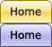
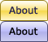
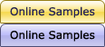
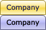
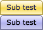
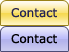
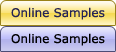
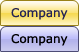
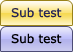
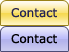

- Dummy item
- Dummy item
- Longer dummy item
- Test test test
- Sub test
- Test test test
- NOROLL item
- Dummy item
This example demonstrates how to setup your main menu items to use images with rollovers instead of text. For the purpose a particular CSS image replacement technique is used. If you are not happy with it (as it has its advantages and disadvantages), you can try using some other CSS image replacement technique. This particular technique is used in this example, as it provides high level of accessibility and also allows the use of all kinds of images (including partially transparent).
First you need to disable the sub menu indicator (arrow) images for the main menu items. This is needed because when they are active, additional padding is applied to one of the sides of the items and we wouldn't want this happening when we use images instead of text. To disable the sub menu indicator images you simply need to set the following in the style array for the main menu (in c_config.js):
false, // UseSubMenuImage (true,false)
You have to also remove the main menu items' padding and border:
0, // BorderWidth
...
0, // Padding
Here is how to create the images:
 

Include both states of the image (normal and hover/focus) one below the other on the image canvas - this way there will be just one image for both states and there will be no need to preload separate images for the hover/focus state. For creating the rollover effect we will rely on the "background-position" CSS property.
You will also need a one-pixel "transparent.gif" image.
Here is how to configure the main menu items in your list structure:
The "Home" item:
<li><a id="home" class="rollover" href="URL"><span class="alt">Home</span><img src="transparent.gif" alt="Home" width="58" height="26" /></a>...
The "About" item:
<li><a id="about" class="rollover" href="URL"><span class="alt">About</span><img src="transparent.gif" alt="About" width="59" height="26" /></a>...
and so on for all main menu items...
As you can see, you need to set an id on each main menu item link and also set the "rollover" class on all links. Inside the links you need to use an additional SPAN element (with the "alt" class set) and also you have to use the one-pixel transparent image and set its width/height to correspond to the dimensions of the image for the current menu item. Don't forget to set the image's "alt" attribute as this is the main reason why we are using it.
First, you will need to set the source of the images with the following rule for all main menu items:
#home, #home:visited {
background-image:url(home.gif);
}
#about, #about:visited {
background-image:url(about.gif);
}
/* and so on for all main menu items... */
Then you will need the following three rules:
.rollover span.alt {
display:none;
}
.rollover img {
border:none;
}
:root .rollover img {
display:block;
}
The first rule hides the text in the SPAN with the "alt" class from the browsers that support CSS and also from most screen readers - the browsers will load the background images and the screen readers will read the "alt" attributes of the transparent image so the text is not needed for them. The text is needed just for the browsers that don't support CSS but load images (and thus will load the transparent image and will not show its "alt" attribute).
The second and third rules are used just to avoid some browser quirks.
And finally the last couple of rules that actually drive the rollovers - for the items' normal state:
.rollover, .rollover:visited {
background-color:transparent !important; /* needed for Opera5/6 */
background-repeat:no-repeat;
background-position:0 0;
}
And for the items' hover/focus state:
.rollover:hover, .rollover:focus, .rollover:active, .rollover.MMO, .rollover.MMO:visited {
background-position:0 -26px;
}
The interesting part here is the "MMO" class. This is the class that the SmartMenus script uses for highlighting the items when c_keepHighlighted is set to true. The name of this class is generated from the name of the style array that is used for the current menu (the main menu in the case) and the letter "O" suffix. In this case the name of the style array for the main menu is "MM" (configured in c_config.js) and thus the class name "MMO".
As you can see, we are using the "background-position" CSS property to create the rollover effect. By setting a negative top position (i.e. "-26px") for the background image (our rollover image) we are placing the hover/focus state of the image in the visible area of the menu item and creating the rollover effect. This CSS technique has become pretty popular and widely used in the last few years as it removes the need for preloading the images and is also working very fast in all browsers that support it (which includes all modern browsers that SM6 fully supports).
The "CURRENT" class is a special class that can be used to highlight with separate style the item that links to the current location. The script can be configured to find that item automatically (if c_findCURRENT is set to true) or you can manually set the class to any menu item: <a href="link" class="CURRENT">... (in our case we also have the "rollover" class set to the main menu items so, you can add the "CURRENT" class like this: <a id="item" class="rollover CURRENT" href="link">...)
Normally, you might want to set the "CURRENT" class to correspond to the hover/focus state. To do this, you will simply have to change the last CSS rule that we added:
.rollover:hover, .rollover:focus, .rollover:active, .rollover.MMO, .rollover.MMO:visited {
background-position:0 -26px;
}
like this:
.rollover.CURRENT, .rollover.CURRENT:visited, .rollover:hover, .rollover:focus, .rollover:active, .rollover.MMO, .rollover.MMO:visited {
background-position:0 -26px;
}
However, you can also set a completely separate rollover for the items that have the "CURRENT" class. For the purpose you can include a third different state on the image canvas below the normal and hover/focus states when creating the images. This way you will have 3 different states on every image. And then you will just need to add the following CSS rule to the rules that are listed in step 4. of this example/tutorial:
.rollover.CURRENT, .rollover.CURRENT:visited {
background-position:0 -52px;
}